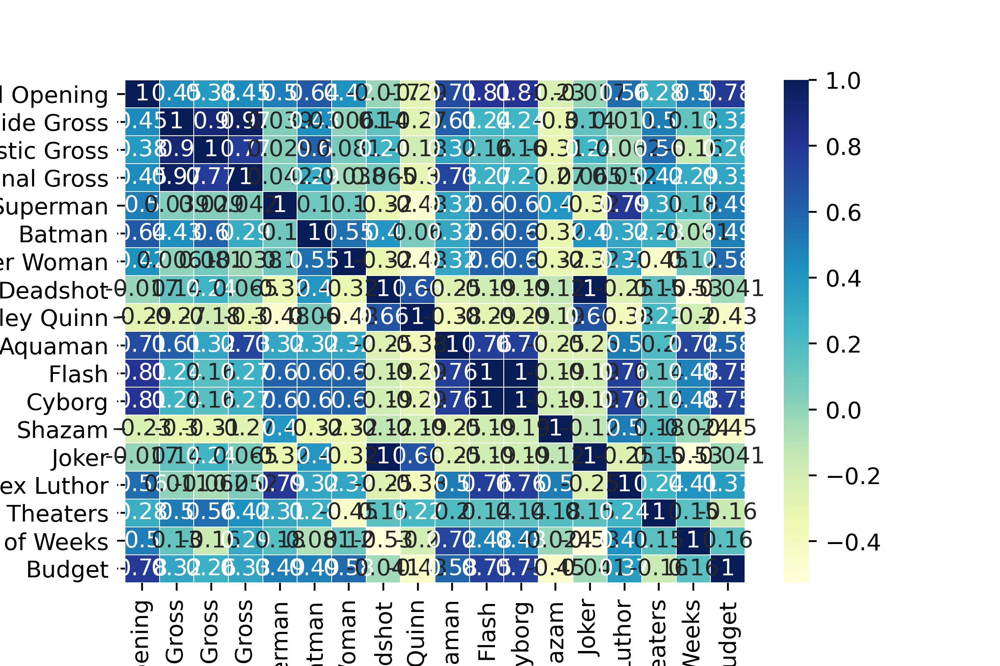

MCU Heatmap

The first step was to create a heatmap to emphasize the correlation between all the variables using seaborn.
As you can see, the darker the color, the higher the positivie correlation. The more yellow the color is, the closer it is to negative correlation.
This image is condensed to emphasize the correlation by color, scroll down to see another seaborn correlation format.
DCEU Heatmap

The first step was to create a heatmap to emphasize the correlation between all the variables using seaborn.
As you can see, the darker the color, the higher the positivie correlation. The more yellow the color is, the closer it is to negative correlation.
This image is condensed to emphasize the correlation by color, scroll down to see another seaborn correlation format.